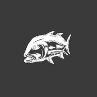

TideCheck provides free tide data for New Zealand waters — no credit card needed, 50 requests per day.
🔗 Register at tidecheck.comOpens in your browser — then come back here
After registering, copy your API key from your TideCheck dashboard and paste it below.
🧭 No key? No problem.
The app uses a built-in harmonic tide model as a fallback — accurate to within 10–20 minutes. Adding a key upgrades to live station data.
Used by the size/bag limit check on the Log tab. NZ recreational rules vary by MPI fishing area — pick the one you fish most.
Reference only — rules vary by exact sub-area and change over time. Always verify with the NZ Fishing Rules app or mpi.govt.nz before keeping a catch.
Save a full backup of your catches and photos to a file, or restore from a previous backup. Your data stays on your device.
Backup includes all catch data & photos · Import merges without duplicates
No backup file? If the original photos are still in your phone's gallery, select them here — we'll match them to catches by date & time automatically.
Checking…